LAB02: ANALOG CIRCUITRY AND FFT
Objective
In this lab we added sensors to the robot and used Arduino’s Open Music Labs’ FFT library to process the signals. We split into two teams; the acoustic team (Frank Li and Boyi Xu) attached a microphone to detect the start frequency of 660 Hz. The optical team (Malavika Attaluri, Shirley Burt, and Adam Weld) attached an IR sensor to detect the presence and frequency of treasures.
Equipment
Acoustic Team
- * Arduino Uno
- * Electret microphone amplifier - MAX 4466
- * 1 Continuous rotation servos
- * 1 µF capacitor
- * 300 Ω resistors
- * ~3 kΩ resistor
Optical Team
- * Arduino Uno
- * IR receiver
- * 300 Ω resistors
- * Treasure board
Pre-Lab
To introduce Fast Fourier Transform (FFT), it would be necessary to start from Fourier Transform. It looks like:
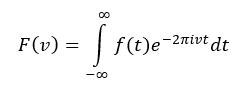where v is the frequency, t is the time, and i is the imaginary number. As you can see from this equation, it transforms a function at time domain to a function at frequency domain. The function in time domain can be thought as a combination of various sinusoids as shown below:
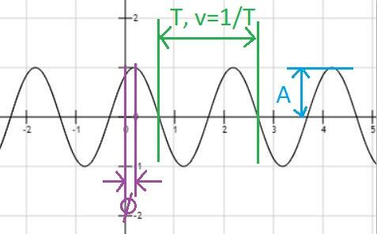where T is the period which is the inverse of frequency, A is the amplitude, and ϕ is the phase. Since we know the three important characteristics of the sinusoidal wave, we could then represent the amplitude and the phase at the specific frequency of the wave.
The original function is consisted of multiple sinusoids wave at time domain as mentioned above. Therefore, it can also be represented by multiple amplitudes and phases at frequency domain. The transform from time domain to frequency domain is called Fourier Transform and the reverse is called Inverse Fourier Transform as shown below:
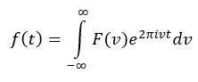We use integral here because of the continuous spectrum of frequency. e^(2πivt) here is Euler’s formula for cos(t)+i*sin(t).
This is actually Continuous Fourier Transform (CFT). Another flavor of Fourier Transform is Discrete Fourier Transform (DFT) which is used by Fast Fourier Transform (FFT). DFT has a finite number of frequency points which differs from CFT who has infinite numbers of sampling points. The improvement of FFT comparing with DFT is that FFT is much faster. The DFT is represented below (1):
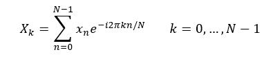where x(0), …, x(N-1) are complex numbers. DFT requires O(N^2) operations: “there are N outputs X(k), and each output requires a sum of N terms” [1]. FFT, however, is any efficient algorithm requiring O(nlog(n)) operations. In this lab, we applied Arduino FFT library which is a “fast implementation of a standard FFT algorithm which operates on only real data” [2].
From ATmega328 datasheet, the resolution of ADC can reach 10 bits when the input clock frequency is lower than 200 kHz [3]. First conversion takes 25 ADC clock cycles for initialization and normal conversion takes 13 cycles. If it is set to free running mode, a new conversion would be performed right after the completion of previous conversion. We also notice that the ADC module contains a prescaler so that the “clock frequency would be acceptable from any CPU frequency above 100kHz” [3]. The Arduino example “fft_adc_serial” uses a prescaler of 32 and saves 256 samples. Since it has a 16MHz crystal, the sampling frequency is 16000kHz/32/13=38kHz. The 660 Hz sine wave can therefore be found at bin number: 660/(38000/256)=5. And the ~10 kHz treasure can be found at bin number: 10000/(38000/256)=68.
From Arduino reference page, we found the maximum reading rate for “analogRead” function is about 10kHz [4]. The sampling frequency is much lower than that of free running mode. We should be able to detect 660 Hz sine wave at bin number: 660/(10000/256)=17. It would be unrealistic to detect 10kHz treasure with “analogRead”. The human voice frequency ranges from 85-255 Hz [5] which should fall around bin 1 for free running mode. The fluorescent light has a frequency twice of the frequency of the electrical supply. 120 Hz should not affect IR sensor since the target’s frequencies are much higher (7kHz, 12kHz, 17kHz). Therefore, both human voice and the light should not affect ADC and IR sensor.
A good cutoff frequency should be about 5-20 kHz since the treasure is from 7 to 17 kHz. A gain of 2V peak to peak should be appropriate. Since the Arduino inputs must be 0 and 5V, a good DC offset should be 2-3V.
Citations: [1] “Fast Fourier transform.” Wikipedia, Wikimedia Foundation, 15 Sept. 2017, en.wikipedia.org/wiki/Fast_Fourier_transform. Accessed 18 Sept. 2017. [2] “Arduino FFT Library.” Open Music Labs Wiki, wiki.openmusiclabs.com/wiki/ArduinoFFT. Accessed 20 Sept. 2017. [3] ATmega328/P Datasheet Complete. Atmel, Nov. 2016. Accessed 20 Sept. 2017. [4] “AnalogRead().” Arduino, www.arduino.cc/en/Reference/AnalogRead. Accessed 20 Sept. 2017. [5] “Voice frequency.” Wikipedia, Wikimedia Foundation, 5 Sept. 2017, en.wikipedia.org/wiki/Voice_frequency. Accessed 20 Sept. 2017.
Open Music Labs FFT Library
Unit Test
Our first step was to determine how the provided FFT functions transformed inputs of different frequencies. In order to read the output of the ADC pin and perform the Fourier Transform on the signal, we started off with the example sketch from the FFT library as a base. We added the following code to capture the output of the Fourier Transform:
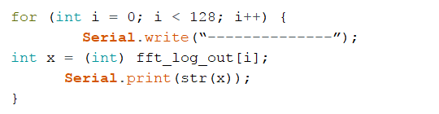We used the function generator to output a sine wave at different frequencies with a peak to peak voltage of around 2 V. The following figure shows the setup of our function generator:

We measured the Fourier Transform of a sine wave at 7kHz, 12 kHz, and 17kHz. We then plotted our results:

From the above results, we were able to determine which bins would have a peak at different input frequencies.
Optical Team
Objective
Our goal for the optical task is to be able to detect a 7kHz IR beacon with an Arduino.
Unit Test
Before connecting the sensor to the Arduino, we measured the output of the sensor on the oscilloscope to determine if we would need any additional analog circuitry. We connected the sensor in series with a 2 kOhm resistor and measured the voltage signal between the sensor and ground as we moved the treasure near the sensor. The following circuit below shows how we connected the sensor to the oscilloscope:

[Note: in this picture we were using the wrong IR sensor, but we swapped it out for the correct one before proceeding with testing & the rest of the lab]
The output on the oscilloscope as we moved the treasure close to the sensor:

And a video of the oscilloscope output as we moved the sensor towards and away from the treasure:

From the low peak-to-peak voltage (around 1 V), we determined that it would be best to feed the output of the sensor into an op-amp.
Analog Circuitry
In order to amplify the sensor output and increase the range at which the treasures could be detected, we constructed an op-amp circuit around the LM 358 dual op-amp package.
The amplifier topology chosen is a dual inverting amplifier. The signal is twice inverted, thus the output remains positive. A lot of tuning of the resistor values was required to ensure the op amp never saturated or produced a clipped output. Another important modification of the circuit was to reference both the OP amp voltage rails, and the photo-transistor output to the “virtual ground” created with a voltage divider halfway between VCC and GND. This allows the op amps to be driven off of a single 5V source and without any negative voltage source.
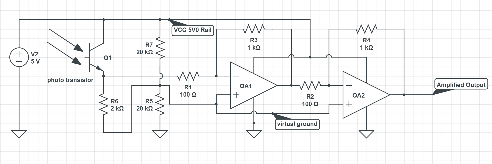The circuit was tested with a breadboard implementation. The laptop in the background shows the unamplified output of the phototransistor versus the ~5X amplified op amp output.

While this circuit does a lot to improve performance, there is more that could be done in the future. A higher voltage op-amp voltage supply could greatly increase gain; the current 5V source can never create a bandwith that takes full advantage of the arduino’s 5V ADC.
Furthermore, an analog filtering system could be put in place to reduce picked up noise.
Detecting the Presence of the Treasure with the Arduino
From the unit test we performed at the start of the lab, we determined that the 7kHz frequency signal has a peak in bins 45-50. For the purposes of this lab, we decided to set our threshold value for the FFT magnitude at 50, in order to make our system sensitive to the treasure. We expect that we will change this value for our final robot based on our final analog circuitry in order to properly distinguish between different frequencies of treasure. Based on this we modified our code to detect the treasure at 7kHz:
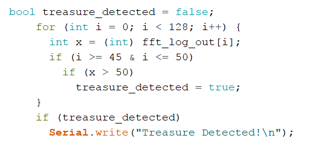Here is a video of the code in action

Acoustic Team
The application used to generate the tones is Tone Generator by Michael Heinz. Using the generator, we hooked up the microphone amplifier breakout board to the Arduino and tested the capabilities of the microphone. Unsurprisingly, the microphone was able to detect the signal and output generated was satisfactory. The microphone breakout board already contains basic preamplification circuit that utilizes a non-inverting negative feedback op-amp circuit in a active second order band pass configuration.
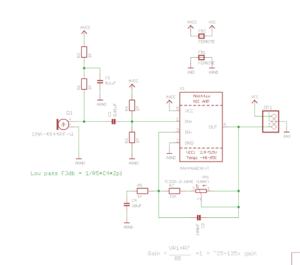 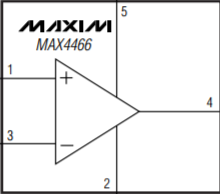The breakout lists that it can detect frequencies from 20Hz-20kHz. The negative feedback provides lower gain but increases stability of the circuit. This works by feeding back some of the output voltage back to the inverting input of the op-amp. This causes the input impedance to the op-amp to be really high which conforms to the ideal op-amp circuit. Consequently, the resistance of the output is low. Also, because it is non-inverting, the output voltage is the same sign as the input voltage which can be convenient to our FFT analysis. C2 acts as the high pass filter which filters out low frequencies as low frequencies cause C2 to act like an open circuit. On the other spectrum, C4 acts as a low pass as at high frequencies, the capacitor shorts the output voltage to ground. This combination creates the band pass filter which only reads frequencies that humans can hear (20Hz-20kHz).
We then tested the circuit using the FFT serial adc test code in order to output the data in bins. Parsing through the code in the example, we realized that the ADC clock speed was set to 500kHz as the prescaler was set to 32. The data that we collected using this clock speed is shown below.
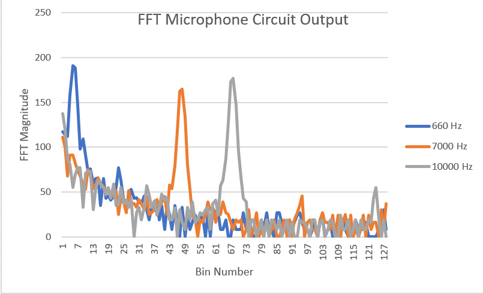We can convert the bin numbers into the respective frequency as we know that (500kHz/13 clock cyles)/256 samples is around 150 Hz per bin. The frequency adjusted graph is as follows.
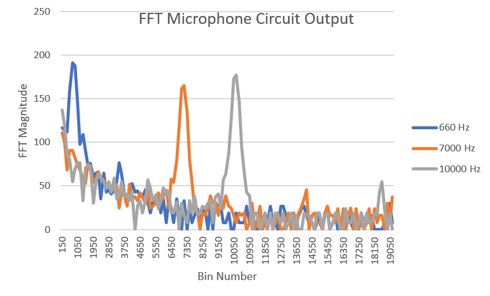As seen by the axis transformation, the data that the microphone recorded was fairly accurate. To confirm this result even more, we hooked up the output of the microphone circuit to the oscilloscope to see the resulting analog signal.

Here is a video showing that the signal detected was very accurate in its frequency.
The following snippet of code is added serial detector code in order to detect the frequencies around 660 Hz.
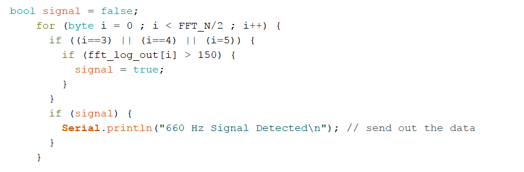But these are pretty ideal conditions. And everyone knows all is fair in love and war. Intimidated by our gorgeous robot, other teams will likely attempt to sabotage our robot by making noise during the starting launch. The basic signal still prevails even though the source of the noise was close to the sensor.